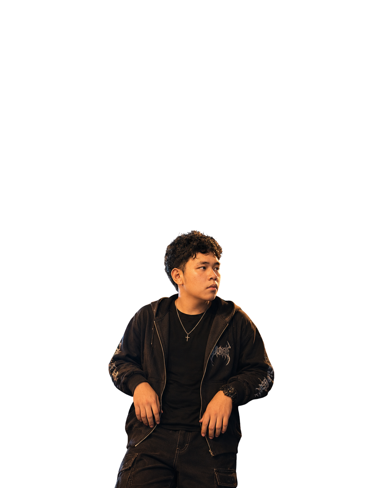
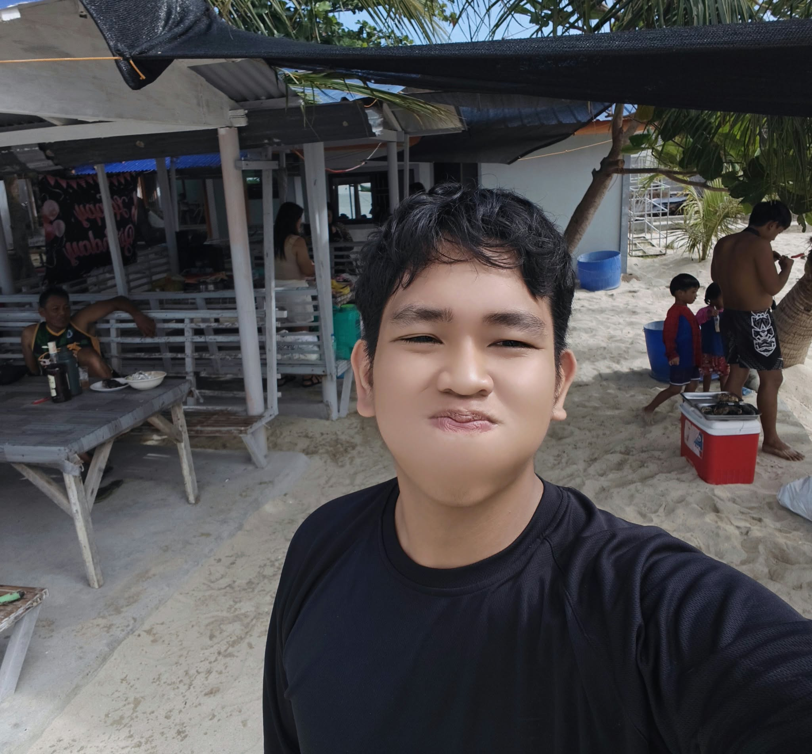
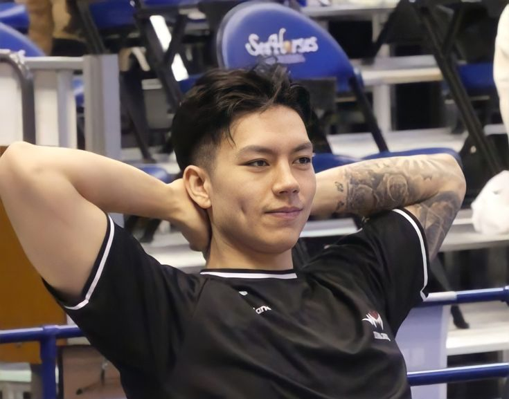

Hi! My name is Marc David G. Lapitan , and I am 18 years old. I live in Tambugan, Camiling, Tarlac. I am the second child among three siblings. Living with my family has taught me how important it is to love and care for each other.
Right now, I am a college student at Tarlac Agricultural University, taking up Bachelor of Science in Information Technology. I chose this course because I really love learning about technology and computers. I am always eager to learn new things in this field.
My main motivation to study hard is my parents. Every single day, I see how hard they work to provide for us and support my studies. My dream is to finish my studies, get a good job, and pay them back for all their kindness so I can help our family.
When I am not studying, I enjoy playing sports, especially track and field. I focus on throwing events, which helps me stay disciplined. One of my best experiences was joining the CLRAA Meet back in 2020. I always try my best in everything I do.
I am an 18-year-old IT student from Camiling, Tarlac. Driven by my passion for computers and my love for my family, I am constantly learning new skills to pave the way for a bright career..

MY PICTURE
MY OTHER PICTUREHere In Atlethics, my favorate game is Shot Put, Discus Throw and Javelin. Although I don't play Javelin cause I don't know the technique.
I play Chess as a hobby not a sport, cause I'm just average when it comes to it and I often play chess when I'm in the mood.
One of the most beautiful thing in the world, I love food it makes me happy but I eat less now cause I'm getting fat.
I'm just new to coding so I'm making it a hobby to myself to be better in making my I use youtube to be better
I love traveling, I often visit Masamerey it is located at Sual, Pangasinan that place heals my body and soul
And playing online games heals my desires cause it makes me calm. Well sometimes not .
“Do not be anxious about anything, but in every situation, by prayer and petition, with thanksgiving, present your requests to God. And the peace of God, which transcends all understanding, will guard your hearts and your minds in Christ Jesus.”.